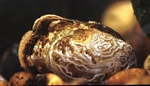
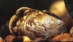

Littlewing Pearlymussel
 (Photo on left from North Carolina Wildlife Resources Commission, right from U.S. Fish and Wildlife service)
(Photo on left from North Carolina Wildlife Resources Commission, right from U.S. Fish and Wildlife service)Description
This shellfish doesn't get much bigger than 38mm in length and 12.7mm in width making it small for a mussel. The shell is light green or dark yellowish with dark rays in color, however, most of the time the shell is eroded so it just looks chalky (Services).Habitat and Location
In the U.S. the Littlewing pearlymussel can be found in Alabama, Kentucky, North Carolina, Tennessee, and Virginia. In North Carolina this mussel can be found in Macon and Swain counties. It can be found under rocks of high gradient streams (Service).
Reasons For Endangerment
Due to dams, channelization projects, and dredging the remaining population is in decline. These activities change the stability, chemistry, temperature, and flow of the streams which, if severe enough, can cause the habitat to be uninhabitable (Service).References
Service, U.S. Fish and Wildlife. "Raleigh Ecological Services Field Office." Raleigh Ecological Services Field Office. U.S. Fish & Wildlife Service, n.d. Web. 26 Oct. 2016.
Service, U.S. Fish and Wildlife. "Species Profile for Littlewing Pearlymussel (Pegias Fabula)." Species Profile for Littlewing Pearlymussel (Pegias Fabula). U.S. Fish & Wildlife Service, n.d. Web. 27 Oct. 2016.